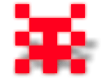

Scriviamo dall'era a 128 bit. Bit Boy conduce un'esistenza tranquilla con i
suoi amici, ma un giorno, proprio di fronte a lui, con un lampo accecante si
materializza una macchina del tempo. Il portellone si apre in una nube di
fumo e ne emerge un mostro incredibile, orribile, bizzarro, brutto e
decisamente pixelloso, che grida:

"Aha, così questo è il futuro, eh?!" Nella sua ingenuità, Kubi rimane
imperturbabile nonostante i curiosi eventi e si presenta subito
amichevolmente:
"Ciao, io sono Kubi, un Bit Boy, e tu chi
sei?" e riceve una risposta decisamente plausibile, date le sembianze del
mostro: "Sono un mostro cattivissimo dell'era a 4 bit". "Wow, un mostro
della vecchia scuola, sei davvero retro!" replica Kubi deliziato.
Il
mostro, tutt'altro che felice di fronte a tanta allegria invece della paura
che si era aspettato, si inalbera: "Retro? Osi chiamarmi retro?! Chi ti
credi di essere a chiamarmi retro?!?!?!"
"Ma il retro va di moda adesso", risponde confuso Kubi, che non ha idea di
quale sia il problema e non trova niente di malvagio in questo furioso
ammasso di pixel.
La mancanza di interesse di Kubi verso la cattiveria del mostro ha toccato
un nervo stupidamente scoperto, così accade l'inevitabile: in un'esplosione
di ira, il mostro e il suo esercito di tirapiedi aggrediscono gli altri Bit
Boy indifesi nelle vicinanze e li portano nella macchina del tempo.
Quando il mostro chiude il portellone con l'abusata risata da pazzo, Kubi
riesce in qualche modo ad aggrapparsi alla macchina e scompare con gli altri
nei recessi del tempo.
 |
|
 |
|
Riuscirà Kubi a salvare tutti i suoi amici dal
passato e a ritornare al presente?
|
Lo speriamo, altrimenti non
ci sarà un sequel... |
|